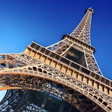

Paris, the City of Light, is one of the most iconic destinations in the world.
Known for its romantic atmosphere, historic landmarks, and vibrant culture,
Paris offers something for everyone. From strolling along the Seine to
exploring world-class museums, it is a city full of timeless charm.
Must-See Spots
Eiffel Tower
Open daily 9:30am - 11:45pm
Louvre Museum
Open Tue-Sun 9:00am - 6:00pm
Notre-Dame Cathedral
Open daily 8:00am - 6:45pm
Sacré-Cœur Basilica
Open daily 7:30am - 7:00pm
Champs-Élysées
Open daily 24 hours
Visitor Tips
Learn a few basic French phrases to connect with locals.
Use public transportation for affordable and efficient travel.
Book tickets online for popular attractions to avoid long lines.
Plan to walk—many of Paris’s treasures are best seen on foot.

The iconic Eiffel Tower during daytime in Paris.
"This travel blog is absolutely inspiring! I found so many helpful tips for
planning my trips."